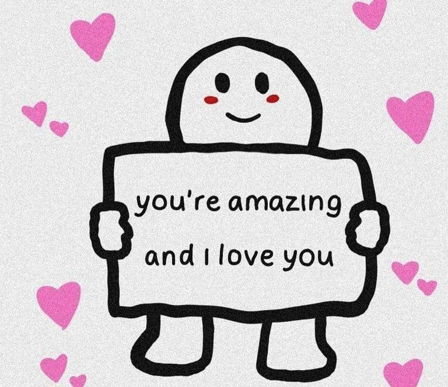
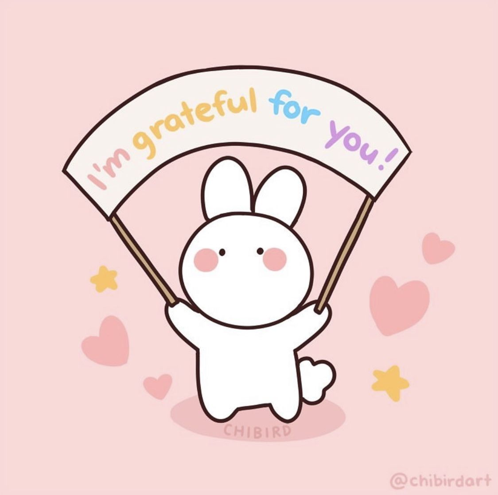
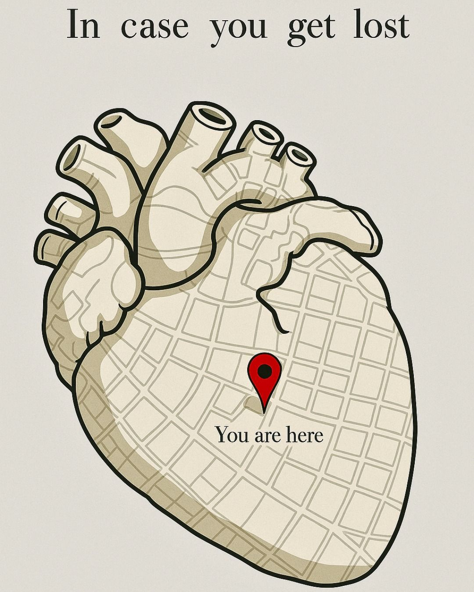
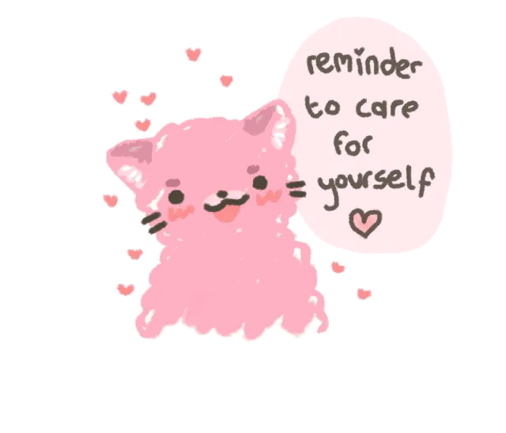
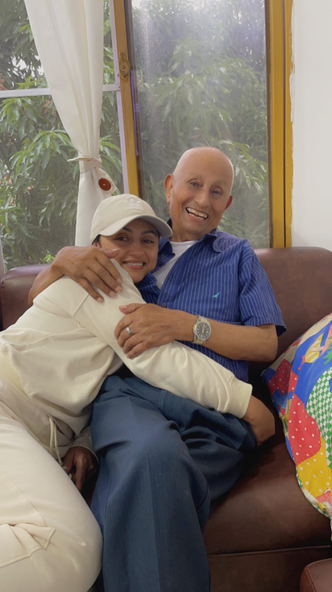
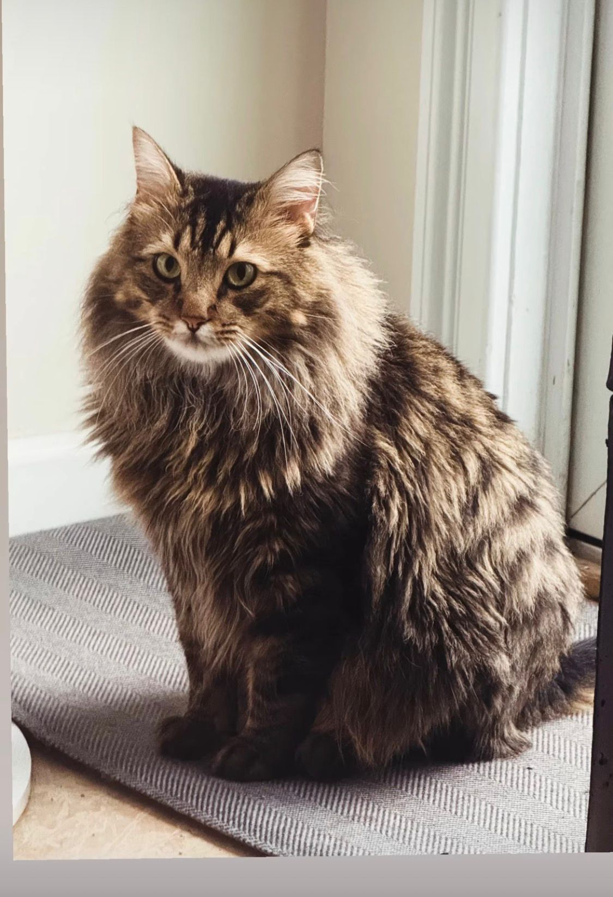
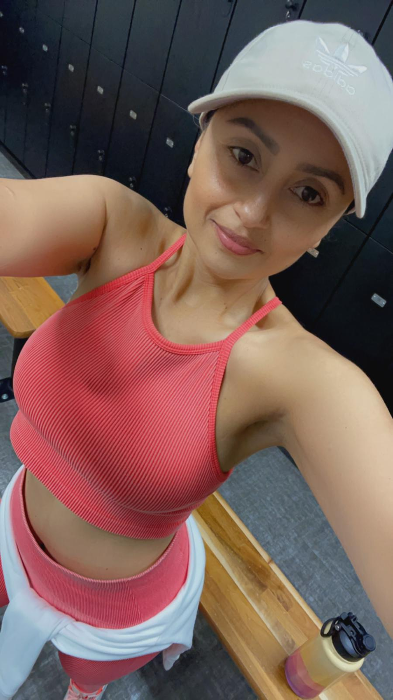
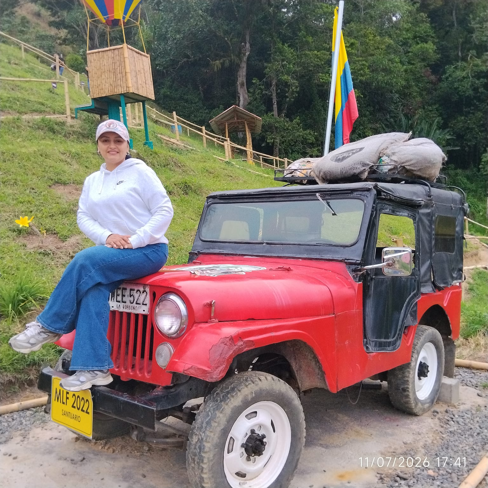
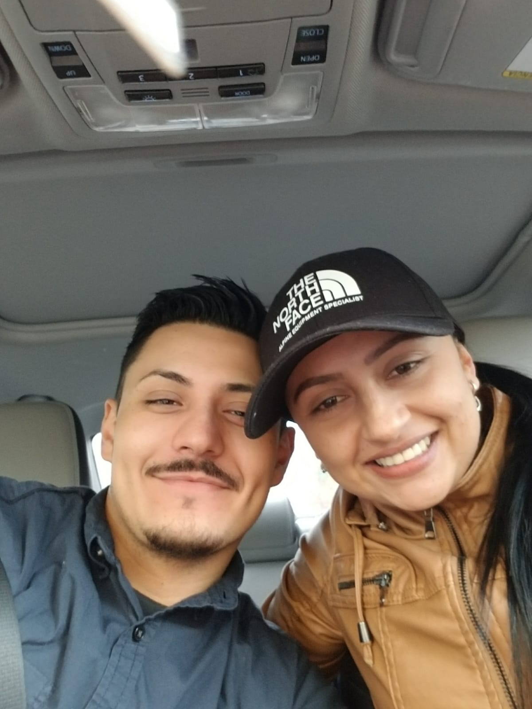
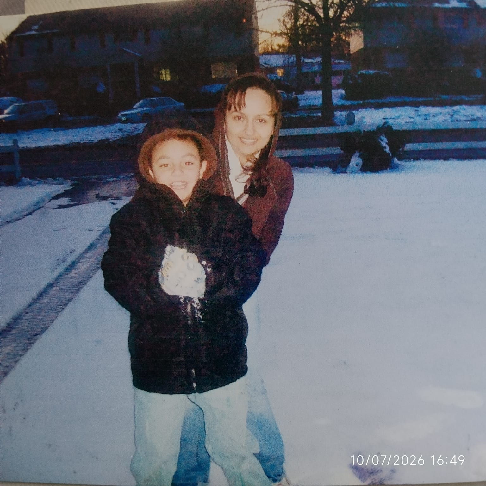

un pedacito de tí
💌 toca cada tarjeta para abrirla 💌

Lo que más admiro de ti
Gracias por...
Pequeños recuerdos
Algunos versículosLittle things that remind me of you



- ★ Mizukiri
- ★ La limonada de coco
- ★ Jugar al impostor
- ★ La serie de Rigo
- ★ Los gatos
- ★ Los arreglos florales
- ★ Los pajaritos



Si llegaste hasta aquí...
entonces ya entendiste que esto nunca fue realmente una página web.
Era mi manera de guardar un pedacito de todo lo que hemos vivido contigo,
y decirte que espero que todavía nos queden muchísimos recuerdos por guardar.